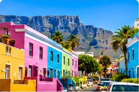

CITY & CULTURE
Cape Town city highlights
Consider combining city viewpoints, heritage areas, museums, the V&A Waterfront and time to enjoy local food and neighbourhoods.
- Table Mountain area and city viewpoints
- Bo-Kaap and historic city sites
- V&A Waterfront and coastal stops